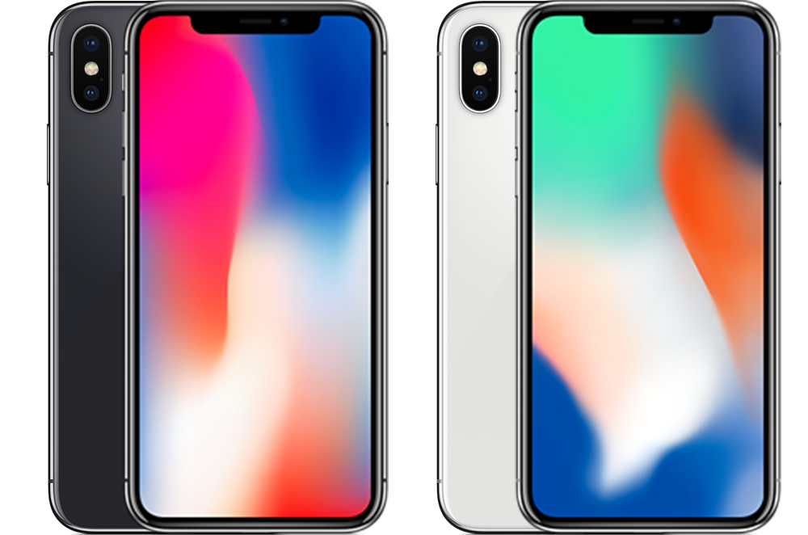

The iPhone X is my overall favorite iPhone due to how innovative it was for its time. Yes it is the cause of the bezel-less hell we are in at the moment, but everything about this device overall was an indication of Apple remembering who they were and what they were made for in the tech industry. The introduction of the notch was a very VERY brave move to do in its era; the entire build of the device in general is very gorgeous, with its stainless steel frame and glass black, everything about it made it so worth the price point it was released at. I currently own this phone and it is my main device, and God, I love every single aspect of it. I literally do not want an upgrade over this except for storage reasons, which is one of the two reasons I do NOT like the iPhone X, the horrible options for storage, only 64GB and 256GB, a lack of 128GB model is the second proof that the iPhone X was a rushed device, the first proof being that it was the only iPhone to be ever delayed. I believe FaceID was a strong introduction to the iPhone lineup, it is very much preferable over TouchID in so many aspects. I know TouchID has its fans, but I think FaceID is objectively superior and is one of the main things that define the iPhone brand.
